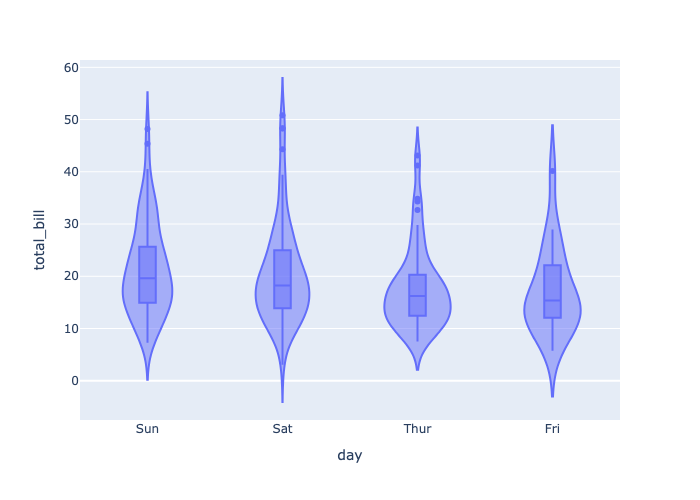

## Setup and ImportsThe tips dataset is a built-in example dataset within the Seaborn library, commonly used for demonstrating data visualization concepts. It contains information about restaurant tips, including variables such as:
- total_bill: The total bill amount in dollars.
- tip: The tip amount in dollars.
- sex: The gender of the person who paid the bill (Male/Female).
- smoker: Whether the person was a smoker (Yes/No).
- day: The day of the week (Thur, Fri, Sat, Sun).
- time: The time of day (Lunch/Dinner).
- size: The size of the party.
Note, some packages and calls take a 2D df, others require 1D data or even aggregate data.
import pandas as pd
import matplotlib.pyplot as plt
import seaborn as sns
import plotly.express as px# Load built-in tips dataset
tips = sns.load_dataset("tips")
tips.head()| total_bill | tip | sex | smoker | day | time | size | |
|---|---|---|---|---|---|---|---|
| 0 | 16.99 | 1.01 | Female | No | Sun | Dinner | 2 |
| 1 | 10.34 | 1.66 | Male | No | Sun | Dinner | 3 |
| 2 | 21.01 | 3.50 | Male | No | Sun | Dinner | 3 |
| 3 | 23.68 | 3.31 | Male | No | Sun | Dinner | 2 |
| 4 | 24.59 | 3.61 | Female | No | Sun | Dinner | 4 |
Visualizations Requirements
Visuals expect a number or range of variables and ofter require a certain type of varible to be of most use. Let’s take a quick tour of the dataset before jumping in.
tips.info()<class 'pandas.core.frame.DataFrame'>
RangeIndex: 244 entries, 0 to 243
Data columns (total 7 columns):
# Column Non-Null Count Dtype
--- ------ -------------- -----
0 total_bill 244 non-null float64
1 tip 244 non-null float64
2 sex 244 non-null category
3 smoker 244 non-null category
4 day 244 non-null category
5 time 244 non-null category
6 size 244 non-null int64
dtypes: category(4), float64(2), int64(1)
memory usage: 7.4 KBWe see 244 rows, with no missing values.
- Float columns: total_bill, tip
- int64 columns: size
- Category columns: sex, smoker, day, time
Histogram
Histograms show distribution of a numerical variable.
Note: ‘;’ at the end of a python statement suppress returned values-this is used in several below examples to focus on the visual.
Matplotlib
plt.hist(tips['total_bill']);plt.hist(tips['tip']);Seaborn
sns.histplot(tips['total_bill'], bins=30);sns.histplot(tips['tip'], bins=30);Plotly
px.histogram(tips, x='total_bill')px.histogram(tips, x='tip')Bar Chart
Bar plots show aggregate values by category.
Matplotlib
plt.bar(tips['day'], tips['total_bill'])Seaborn
sns.barplot(x='day', y='total_bill', data=tips)Plotly
# Aggregate data for this plot
agg = tips.groupby("day", as_index=False)["total_bill"].mean()
agg| day | total_bill | |
|---|---|---|
| 0 | Thur | 17.682742 |
| 1 | Fri | 17.151579 |
| 2 | Sat | 20.441379 |
| 3 | Sun | 21.410000 |
px.bar(x=agg['day'], y=agg['total_bill'])
Explore the Data: Customize a graph?
Do you see any other interesting comparisons to try? Try changing the x-axis to time instead of day. Or see if tips reflects total_bill by day.
Matplotlib
# Count Plot with Matplotlib
# Example placeholder - customize per chart type
# Replace with appropriate matplotlib code for Count Plot
plt.title("Count Plot - Matplotlib")
plt.show()# Count Plot with Seaborn
# Replace with appropriate seaborn code for Count Plot
plt.title("Count Plot - Seaborn")
plt.show()Plotly
# Count Plot with Plotly Express
# Replace with appropriate plotly.express code for Count Plot
# e.g., px.bar(...), px.scatter(...)Box Plot
Box plots summarize distributions and highlight outliers.
It can be extra helpful to compare mutliple values, a grouped values.
Matplotlib
# Box Plot with Matplotlib
plt.boxplot(tips['total_bill']);# Box Plot with Matplotlib
plt.boxplot(x=tips[['total_bill', 'tip']]);Seaborn
sns.boxplot(x='total_bill', data=tips);# Bonus Tip: Seaborn will plot all numerical columns in a wide data format if no x given
sns.boxplot(data=tips);Plotly
px.box(tips, x='total_bill')px.box(tips, x='day', y='total_bill')Violin Plot
Violin plots combine box plots with a KDE plot.
Matplotlib
plt.violinplot(tips[['total_bill', 'tip']]);Seaborn
sns.violinplot(x='day', y='total_bill', data=tips);Plotly
px.violin(tips, x='day', y='total_bill', box=True)
Scatter Plot
Scatter plots show relationships between two numerical variables.
Matplotlib
plt.scatter(tips['total_bill'], y=tips['tip'])Seaborn
sns.scatterplot(x='total_bill', y='tip', data=tips)Plotly
px.scatter(tips, x='total_bill', y='tip')
Pie Chart
Do NOT Use
There are always much better, clearer ways to present data.